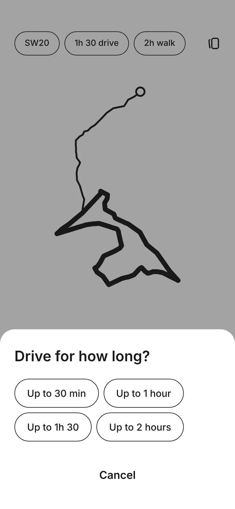
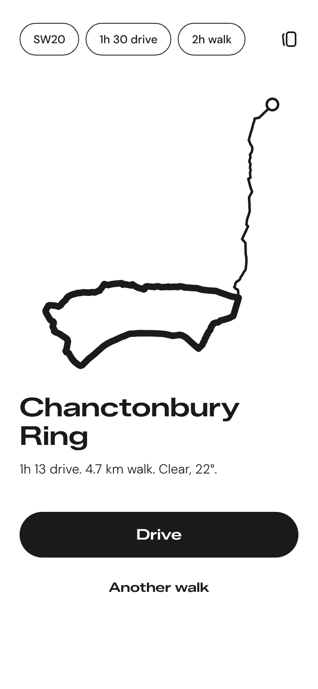
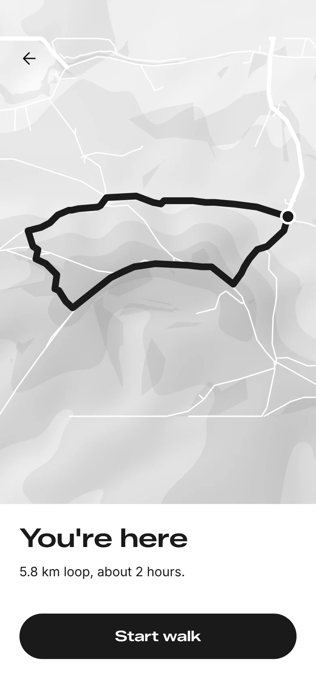
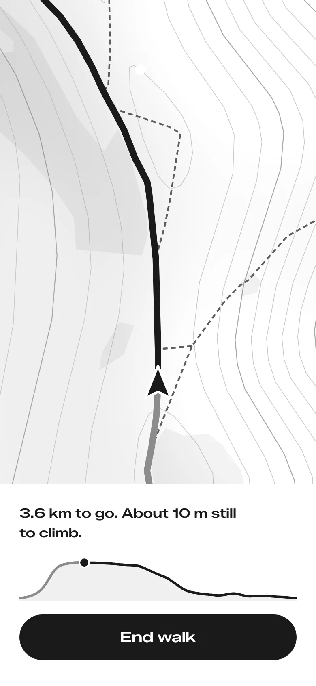
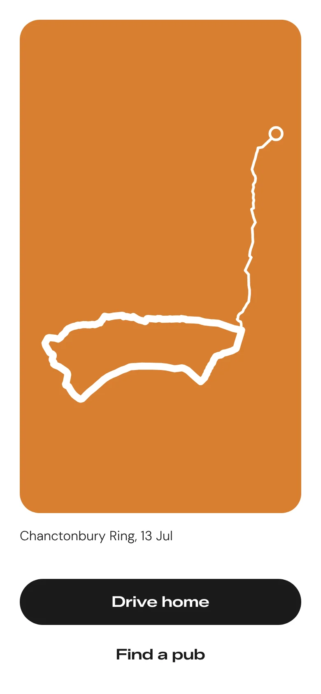
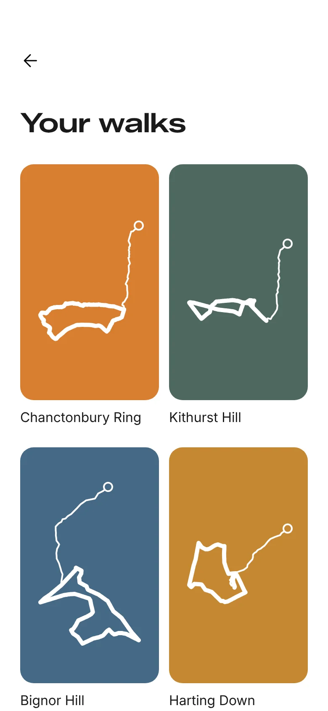

More walk.
Less app.
Choosing a walk shouldn’t take longer than the walk. Hlid picks one you’ve never done, so all you have to do is go.
No set-up.
Just go.
Open it and today’s walk is already there. Change where you set off from, how long you want to drive or how long you want to walk, and it finds another.

Somewhere you’ve
never been
Not a list of 400 trails to scroll through, just one walk, picked for the day and its weather.

Google gets
you there
Hlid sends the route to Google Maps and always ends it at a free car park at the start of the walk, so you don’t have to work out where to park.

You’ll hardly
need a map
Once you’re walking, the map turns with you, so the way ahead is always up. It’s black and white, with the hills softly shaded so you can see the climbs. Glance at it if you’re unsure. Otherwise follow the signs and look up.

Keep the day
you had
When you finish, you get one picture of your day: the drive and the walk as a single line. Then drive home, or let Hlid find a pub nearby.

Coloured by
the weather
Cold days come out blue, warm days gold, and cloud or rain makes it darker. Every walk you’ve done, in one place.

Nothing to unlock.
One price.
Offline maps, the off-path buzz and every walk are included. No account needed. It’s on Android first, and in testing now.
Try it early